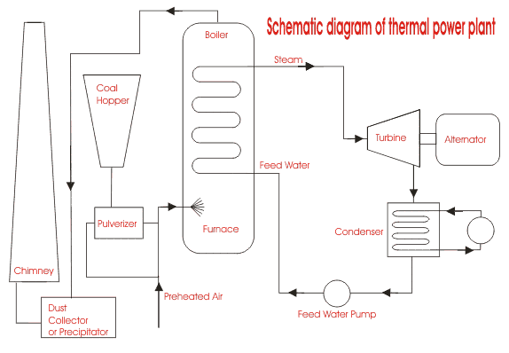
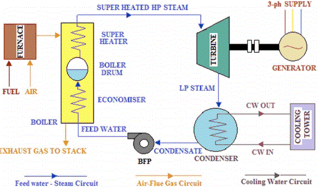
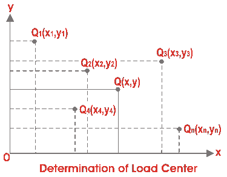
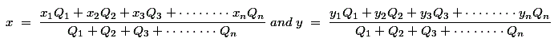

• Line Diagram
• Overview
• Efficiency
• Location
• Advantages & Disadvantages
Thermal power generation plant or thermal power station is the most conventional source of electric power. Thermal power plant is also referred as coal thermal power plant and steam turbine power plant. Before going into detail of this topic, we will try to understand the line diagram of electric power generation plant.
Theory of Thermal Power Station
The theory of thermal power station or working of thermal power station is very simple. A power generation plant mainly consists of alternator runs with help of steam turbine. The steam is obtained from high pressure boilers. Generally in India, bituminous coal, brown coal and peat are used as fuel of boiler. The bituminous coal is used as boiler fuel has volatile matter from 8 to 33 % and ash content 5 to 16 %. To increase the thermal efficiency, the coal is used in the boiler in powder form.
In coal thermal power plant, the steam is produced in high pressure in the steam boiler due to burning of fuel (pulverized coal) in boiler furnaces. This steam is further supper heated in a super heater. This supper heated steam then enters into the turbine and rotates the turbine blades. The turbine is mechanically so coupled with alternator that its rotor will rotate with the rotation of turbine blades. After entering in turbine the steam pressure suddenly falls and corresponding volume of the steam increases. After imparting energy to the turbine rotor the steam passes out of the turbine blades into the condenser. In the condenser the cold water is circulated with the help of pump which condenses the low pressure wet steam. This condensed water is further supplied to low pressure water heater where the low pressure steam increases the temperature of this feed water, it is again heated in high pressure.
For better understanding we furnish every step of function of a thermal power station as follows,
1) First the pulverized coal is burnt into the furnace of steam boiler.
2) High pressure steam is produced in the boiler.
3) This steam is then passed through the super heater, where it further heated up.
4) This supper heated steam is then entered into a turbine at high speed.
5) In turbine this steam force rotates the turbine blades that means here in the turbine the stored potential energy of the high pressured steam is converted into mechanical energy.
Line Diagram of Power Plant

6) After rotating the turbine blades, the steam has lost its high pressure, passes out of turbine blades and enters into a condenser.
7) In the condenser the cold water is circulated with help of pump which condenses the low pressure wet steam.
8) This condensed water is then further supplied to low pressure water heater where the low pressure steam increases the temperature of this feed water, it is then again heated in a high pressure heater where the high pressure of steam is used for heating.
9) The turbine in thermal power station acts as a prime mover of the alternator.
Overview of Thermal Power Plant
A typical Thermal Power Station Operates on a Cycle which is shown below.
A typical Thermal Power Station Operates on a Cycle
The working fluid is water and steam. This is called feed water and steam cycle. The ideal Thermodynamic Cycle to which the operation of a Thermal Power Station closely resembles is the RANKINE CYCLE.
In steam boiler the water is heated up by burning the fuel in air in the furnace & the function of the boiler is to give dry super heated steam at required temperature.
The steam so produced is used in driving the steam Turbines. This turbine is coupled to synchronous generator (usually three phase synchronous alternator), which generates electrical energy.
The exhaust steam from the turbine is allowed to condense into water in steam condenser of turbine, which creates suction at very low pressure and allows the expansion of the steam in the turbine to a very low pressure. The principle advantages of condensing operation are the increased amount of energy extracted per kg of steam and thereby increasing efficiency and the condensate which is fed into the boiler again reduces the amount of fresh feed water.
The condensate along with some fresh make up feed water is again fed into the boiler by pump (called the boiler feed pump).
In condenser the steam is condensed by cooling water. Cooling water recycles through cooling tower. This constitutes cooling water circuit.
The ambient air is allowed to enter in the boiler after dust filtration. Also the flue gas comes out of the boiler and exhausted into atmosphere through stacks. These constitute air and flue gas circuit. The flow of air and also the static pressure inside the steam boiler (called draught) is maintained by two fans called Forced Draught (FD) fan and Induced Draught(ID) fan.
The total scheme of a typical thermal power station along with different circuits is illustrated below.

Inside the boiler there are various heat exchangers, viz.’ Economiser’, ‘Evaporator’ (not shown in the fig above, it is basically the water tubes, i.e. downcomer riser circuit), ‘Super Heater’ (sometimes ‘Reheater’, ‘air preheater’ are also present).
In Economiser the feed water is heated to considerable amount by the remaining heat of flue gas.
The Boiler Drum actually maintains a head for natural circulation of two phase mixture (steam + water) through the water tubes.
There is also Super Heater which also takes heat from flue gas and raises the temperature of steam as per requirement.
Efficiency of Thermal Power Station or Plant
The overall efficiency of a thermal power station or plant varies from 20% to 26% and it depends upon plant capacity.
| Installed plant capacity | Average overall thermal efficiency |
|---|---|
| upto 1MW | 4% |
| 1MW to 10MW | 12% |
| 10MW to 50MW | 16% |
| 50MW to 100MW | 24% |
| above 100MW | 27% |
Thermal Power Plant Location

A thermal power station or thermal power plant has ultimate target to make business profit. Hence for optimizing the profit, the location of the station is much important factor. Power generation plant location plays an optimizing part in the economy of the station.
The most economical , location of power plant can be determined by graphical method as described below,
The most economical and ideal power plant location is the center of gravity of the load because for such a power generation plant the length of the power transmission network will be minimum, thus the capital cost to the system is reduced.
Let’s explain the graphical method, say, X and Y be two reference axes.
Let’s Q1(x1, y1), Q2(x2, y2), Q3(x3, y3), Q4(x4, y4),……………………………………….and Qn(xn, yn) are n numbers of load centers. From the above graph we get, the coordinates of the center of gravity of the load, Q(x, y) where

Obviously the location of thermal power station is best at the center of gravity of the load, but many times it is not possible to establish a thermal power plant at the CG of the load. Since normally CG point of the load may be at the heart of the city. so other many points to be considered to decide the best optimized location of the power plant.
1) The electric power generation plant must be constructed at such a place where the cost of land is quite reasonable.
2) The land should be such that the acquisition of private property must be minimum.
3) A large quantity of cooling water is required for the condensers etc of thermal power generation plant, hence the plant should preferably situated beside big source of natural water source such as big river.
4) Availability of huge amount of fuel at reasonable cost is one of the major criterion for choosing plant location.
5) The plant should be established on plane land.
6)The soil should be such that it should provide good and firm foundation of plant and buildings.
7) The thermal power plant location should not be very nearer to dense locality as there are smoke, noise steam, water vapors etc.
8) There must be ample scope of development of future demand.
9) Place for ash handling plant for thermal power station should also be available very near by.
10) Very tall chimney of power station should not obstruct the traffics of air ships.
Advantages & Disadvantages of Thermal Power Station
Advantages:
1) Economical for low initial cost other than any generating plant.
2) Land required less than hydro power plant.
3) Since coal is main fuel & its cost is quite cheap than petrol/diesel so generation cost is economical.
4) There are easier maintenance.
5) Thermal power plant can be installed in any location where transportation & bulk of water are available.
Disadvantages:
1) The running cost for a thermal power station is comparatively high due to fuel,maintenance etc.
2) Large amount of smoke causes air pollution.The thermal power station is responsible for Global warming.
3) The heated water that comes from thermal power plant has an adverse effect on the lives in the water and disturbs the ecology.
4) Overall efficiency of thermal power plant is low like less 30%.
 by
by